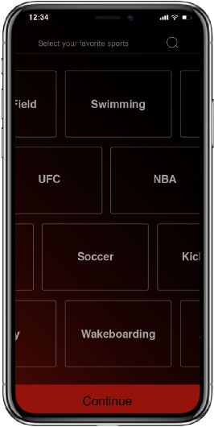
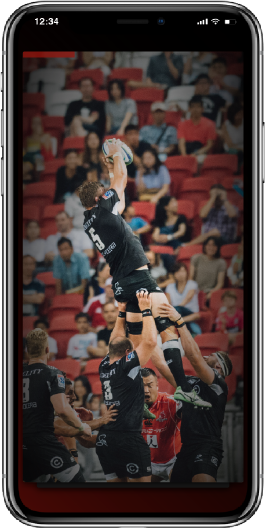
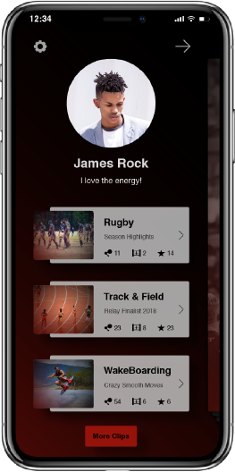

Story
Everyday, people are scrolling their internet feeds for the latest highlights of their favorite players and teams. With over 100 different sports around the world, its hard to stay up-to-date wth all of them at once. If a fan wants to see certain players or teams, they have to search tons of sites for the right sources. After they find the source, they still have to make sure it's the content they want.
The Reel is an exclusive highlight resource every fans desires. Fans will have the ability to view all their favorite sports, teams, players,and leagues. Fans can follow their reels, create a list of favorites and even share those reels with friends on other social media plateforms.
Every fan deserves a chance to root for their team. With the Reel, those chances are endless.
The Reel is an exclusive highlight resource every fans desires. Fans will have the ability to view all their favorite sports, teams, players,and leagues. Fans can follow their reels, create a list of favorites and even share those reels with friends on other social media plateforms.
Every fan deserves a chance to root for their team. With the Reel, those chances are endless.
User Persona
The user persona for this appilcation was based off the most common demographics of the average sports fan.
In the research we found that our average users would be mostly male, ranging in age from 15-35.
My Role
UI UX Design
Branding and Logo Design
Motion Graphics and Prototyping
Design Challanges
Providing a service that allows users to view a variety of sports.
Allowing users to personalize their feeds.
Staying up-to-date with teams and players
Developing a filter system for easier searches.
Solutions
A feed that flows smoothly into videos. Swiping left or right to reveal the clip underneath. The goal for this interaction is to get the user to endlessly swipe for content.
Getting Set Up
A quick an easy setup page to get the user moving quickly to revieving content. Just enter name, email and create a password to get started.
User Preferences
The Reel gives the user the ability to select their favorite sports, creating a profile feed of what they like. After the user is finished, they will be taken to their new Reel feed to prouse through hundreds of sports clips.

Quick Swipe
The UI for the home page is based off the simple interaction of a swipe, a quick gesture that creates an effective, and effecient user experience. The idea is to allow the user to get lost in the action of just swiping to view content.
Video Page
The video page features the desired clip that the user has selected to veiw. This page features a timeline for the video duration. The video is displayed in a verticle view to create unity throughout the application design.

Sharing Clips
With just a few interactions the user has the ability to share any clips to their other social media accounts, allowing the user to share their favorite clips with friends on other plateforms.
User's Clips
With the use of the "Clips" feature of the application, the user has the ability to save their favorite clips into a personal vault for them to share and watch later. This feature add to the personalization of the application, creating better interactivity and engagment within the app.

Search
The search feature of this application is just a click away for the user to browse through hundreds of sports. This feature also includes recommended clips based off the user's preferences.
Wireframes and Sketches
The objective was to create a style that fit the energy of the sports veiwer. the upbeat, fastpaced, and bold style helps keep the user engaged and attentive to the app and the content.
Final Goals
The overall goal of this application is to allow user to subscribe to an endless amount of sports highlights and showcases. The user will have the ability to view, share, and like hundreds of their favorite sports from around the world. With this application people will be allowed to connect to world of sports in a whole new way.